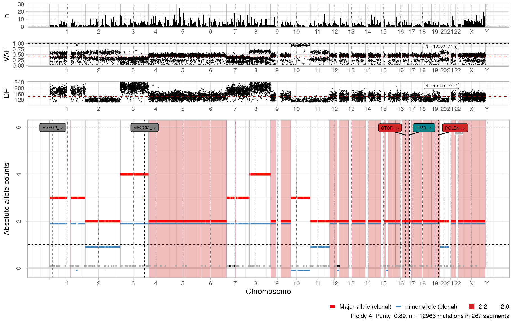

library(CNAqc)
#> ✔ Loading CNAqc, 'Copy Number Alteration quality check'. Support : <https://caravagn.github.io/CNAqc/>
# Extra packages
require(dplyr)
#> Loading required package: dplyr
#>
#> Attaching package: 'dplyr'
#> The following objects are masked from 'package:stats':
#>
#> filter, lag
#> The following objects are masked from 'package:base':
#>
#> intersect, setdiff, setequal, union
#if you use RStudio you will probably have to run this line
# options(connectionObserver = NULL)Note: variant annotation should be carried out with dedicated tools. CNAqc functions should only be used to get a preliminary idea of the most important mutations annotated in a sample.
Annotating driver mutations with VariantAnnotation and Intogen
CNAqc can annotate input mutations and flag potential driver mutations. Using the VariantAnnotation package and the intOGen database, CNAqc performs the following steps:
- Annotates the position of each mutation, with VariantAnnotation:
-
coding, -
intron, -
fiveUTR, -
threeUTR, -
intron, -
intergenic, -
spliceSite, -
promoter.
-
- Annotates the consequence on the protein for coding mutations, with
change in the amino acid if known, with VariantAnnotation:
-
nonsynonymous, -
synonymous, -
frameshift, -
stop.
-
- Compares non-synonymous mutations to known driver genes from the intOGen database or a custom list, and flags drivers.
This functionality works with a CNAqc object.
# Dataset available with the package
data('example_dataset_CNAqc', package = 'CNAqc')
x = CNAqc::init(
mutations = example_dataset_CNAqc$mutations,
cna = example_dataset_CNAqc$cna,
purity = example_dataset_CNAqc$purity,
ref = 'hg19')
#>
#> ── CNAqc - CNA Quality Check ───────────────────────────────────────────────────
#> ℹ Using reference genome coordinates for: hg19.
#> ✔ Found annotated driver mutations: TTN, CTCF, and TP53.
#> ✔ Fortified calls for 12963 somatic mutations: 12963 SNVs (100%) and 0 indels.
#> ! CNAs have no CCF, assuming clonal CNAs (CCF = 1).
#> ✔ Fortified CNAs for 267 segments: 267 clonal and 0 subclonal.
#> ✔ 12963 mutations mapped to clonal CNAs.
# What we annotate
x %>% Mutations
#> # A tibble: 12,963 × 17
#> chr from to ref alt NV DP VAF FILTER ANNOVAR_FUNCTION
#> <chr> <dbl> <dbl> <chr> <chr> <dbl> <dbl> <dbl> <chr> <chr>
#> 1 chr1 1027104 1027105 T G 6 60 0.1 PASS UTR5
#> 2 chr1 2248588 2248589 A C 9 127 0.0709 PASS intergenic
#> 3 chr1 2461999 2462000 G A 65 156 0.417 PASS upstream
#> 4 chr1 2727935 2727936 T C 90 180 0.5 PASS downstream
#> 5 chr1 2763397 2763398 C T 61 183 0.333 PASS intergenic
#> 6 chr1 2768208 2768209 C T 130 203 0.640 PASS intergenic
#> 7 chr1 2935590 2935591 C T 132 228 0.579 PASS intergenic
#> 8 chr1 2980032 2980033 C T 85 196 0.434 PASS ncRNA_exonic
#> 9 chr1 3387161 3387162 T G 6 124 0.0484 PASS intronic
#> 10 chr1 3502517 3502518 G A 10 88 0.114 PASS intronic
#> # ℹ 12,953 more rows
#> # ℹ 7 more variables: GENE <chr>, is_driver <lgl>, driver_label <chr>,
#> # type <chr>, karyotype <chr>, segment_id <chr>, cna <chr>Required packages
CNAqc uses databases from Bioconductor to annotate the variants; installation of these databases might take a bit of time because ~1GB of data have to be downloaded. This will happen only the first time the annotation is run.
# Reference against which we mapped the reads
reference_genome <- example_dataset_CNAqc$reference
# All those packages are distributed in Bioconductor
if (!requireNamespace("BiocManager", quietly = TRUE))
install.packages("BiocManager", repos="http://cran.us.r-project.org")
#>
#> The downloaded binary packages are in
#> /var/folders/2s/h6hvv9ps03xgz_krkkstvq_r0000gn/T//RtmpdmM79Q/downloaded_packages
# We have to install the corresponding txdb package for transcript annotations
paste0("TxDb.Hsapiens.UCSC.",reference_genome, ".knownGene") %>% BiocManager::install()
# We have to install also the BS database for the sequences (it may take some time)
paste0("BSgenome.Hsapiens.UCSC.",reference_genome) %>% BiocManager::install()
# Then these two packages provide useful utilities to deal with biological databases
"Organism.dplyr" %>% BiocManager::install()
"org.Hs.eg.db" %>% BiocManager::install()Drivers known to CNAqc
CNAqc has pre-loaded a list of 568 driver genes for 66 cancer types, compiled from intOGen release date 2020.02.01.
# The available list:
# - gene id
# - tumour code where the gene has been flagged as driver
# - tumour code longname (Esophageal cancer)
data("intogen_drivers", package = 'CNAqc')
# Number of genes (568)
intogen_drivers$gene %>% unique
#> [1] "ABCB1" "ABI1" "ABL1" "ABL2" "ACKR3"
#> [6] "ACSL3" "ACVR1" "ACVR2A" "ADGRB1" "AFF1"
#> [11] "AFF3" "AJUBA" "AKT1" "AKT3" "ALB"
#> [16] "ALK" "AMER1" "APC" "AR" "ARAF"
#> [21] "ARHGAP35" "ARHGAP5" "ARHGEF10" "ARHGEF10L" "ARHGEF12"
#> [26] "ARID1A" "ARID1B" "ARID2" "ASXL1" "ASXL2"
#> [31] "ATF7IP" "ATG7" "ATM" "ATR" "ATRX"
#> [36] "AXIN1" "AXIN2" "B2M" "BAP1" "BCL10"
#> [41] "BCL11A" "BCL11B" "BCL2" "BCL2L12" "BCL6"
#> [46] "BCL7A" "BCL9" "BCL9L" "BCLAF1" "BCOR"
#> [51] "BCORL1" "BCR" "BIRC3" "BIRC6" "BMPR1A"
#> [56] "BMPR2" "BRAF" "BRCA1" "BRCA2" "BRD4"
#> [61] "BRD7" "BTG1" "BTK" "CACNA1D" "CAMTA1"
#> [66] "CARD11" "CARS" "CASP8" "CASZ1" "CBFA2T3"
#> [71] "CBFB" "CBL" "CCDC6" "CCND1" "CCND2"
#> [76] "CCND3" "CCR7" "CD58" "CD79B" "CDC73"
#> [81] "CDH1" "CDH10" "CDH11" "CDK12" "CDK4"
#> [86] "CDKN1A" "CDKN1B" "CDKN2A" "CDKN2C" "CDX2"
#> [91] "CEBPA" "CHD2" "CHD4" "CHEK2" "CIC"
#> [96] "CIITA" "CLIP1" "CLTC" "CLTCL1" "CMTR2"
#> [101] "CNOT3" "CNOT9" "COL1A1" "CPEB3" "CR1"
#> [106] "CREBBP" "CRNKL1" "CRTC1" "CSF3R" "CTCF"
#> [111] "CTNNB1" "CUL3" "CUX1" "CXCR4" "CYLD"
#> [116] "CYP2C8" "CYSLTR2" "DAXX" "DAZAP1" "DCAF12L2"
#> [121] "DCC" "DCSTAMP" "DDB2" "DDX3X" "DDX6"
#> [126] "DGCR8" "DHX9" "DICER1" "DIS3" "DNAJB1"
#> [131] "DNMT3A" "DOT1L" "DROSHA" "DTX1" "DUSP16"
#> [136] "EBF1" "EFTUD2" "EGFR" "EGR2" "EHD2"
#> [141] "EIF1AX" "EIF3E" "ELF3" "ELF4" "ELL"
#> [146] "ELN" "EML4" "ENPEP" "EP300" "EPAS1"
#> [151] "EPHA2" "EPHA3" "EPHA7" "EPS15" "ERBB2"
#> [156] "ERBB3" "ERBB4" "ERCC2" "ERCC3" "ERG"
#> [161] "ESR1" "ESRRA" "ETV4" "ETV5" "ETV6"
#> [166] "EWSR1" "EXT2" "EZH2" "FAM135B" "FAM174B"
#> [171] "FAM186A" "FAM46C" "FANCA" "FANCC" "FANCD2"
#> [176] "FANCF" "FAS" "FAT1" "FAT2" "FAT3"
#> [181] "FAT4" "FBLN1" "FBN2" "FBXO11" "FBXW7"
#> [186] "FGD5" "FGFR1" "FGFR2" "FGFR3" "FGFR4"
#> [191] "FH" "FHIT" "FLCN" "FLT3" "FLT4"
#> [196] "FN1" "FOXA1" "FOXA2" "FOXD4L1" "FOXL2"
#> [201] "FOXO1" "FOXO3" "FOXP1" "FUBP1" "GATA1"
#> [206] "GATA2" "GATA3" "GLI1" "GMPS" "GNA11"
#> [211] "GNA13" "GNAI2" "GNAQ" "GNAS" "GRIN2A"
#> [216] "GTF2I" "H3F3A" "HERC2" "HGF" "HIP1"
#> [221] "HIST1H3B" "HIST1H4I" "HLA-A" "HLA-B" "HNF1A"
#> [226] "HNRNPA2B1" "HOXA11" "HOXC13" "HOXD13" "HRAS"
#> [231] "HSP90AA1" "HSP90AB1" "HSPG2" "HTRA2" "ID3"
#> [236] "IDH1" "IDH2" "IFNAR1" "IFNGR1" "IKBKB"
#> [241] "IKZF1" "IKZF3" "IL6ST" "IL7R" "ING1"
#> [246] "INO80" "IRAK1" "IRF1" "IRF4" "IRS4"
#> [251] "JAK1" "JAK2" "JAK3" "KAT6A" "KAT6B"
#> [256] "KDM3B" "KDM5A" "KDM5C" "KDM6A" "KDR"
#> [261] "KEAP1" "KEL" "KIF5B" "KIFC1" "KIT"
#> [266] "KLF4" "KLF5" "KLHL36" "KLHL6" "KMT2A"
#> [271] "KMT2B" "KMT2C" "KMT2D" "KRAS" "LATS1"
#> [276] "LATS2" "LDB1" "LIFR" "LOX" "LPAR4"
#> [281] "LPP" "LRIG3" "LRP1B" "LTB" "LY75-CD302"
#> [286] "LZTR1" "MAF" "MALT1" "MAML2" "MAP2"
#> [291] "MAP2K1" "MAP2K4" "MAP2K7" "MAP3K1" "MAPK1"
#> [296] "MARK2" "MAX" "MB21D2" "MCM3AP" "MDM2"
#> [301] "MDM4" "MECOM" "MED12" "MEF2B" "MEN1"
#> [306] "MET" "MGA" "MLLT1" "MLLT3" "MSI2"
#> [311] "MSN" "MTCP1" "MTOR" "MYC" "MYCN"
#> [316] "MYD88" "MYH11" "MYH9" "MYO5A" "NBEA"
#> [321] "NCOA1" "NCOA2" "NCOR1" "NCOR2" "NEFH"
#> [326] "NF1" "NF2" "NFATC2" "NFE2L2" "NFKB2"
#> [331] "NFKBIA" "NFKBIE" "NIN" "NIPBL" "NKTR"
#> [336] "NKX2-1" "NONO" "NOTCH1" "NOTCH2" "NPEPPS"
#> [341] "NPM1" "NPRL2" "NRAS" "NRG1" "NRK"
#> [346] "NRP1" "NSD1" "NSD2" "NT5C3A" "NTRK1"
#> [351] "NTRK3" "NUMA1" "NUP214" "NXF1" "P2RY8"
#> [356] "PABPC1" "PAK2" "PARP4" "PBRM1" "PCBP1"
#> [361] "PCDH17" "PCMTD1" "PDCD1LG2" "PDE4DIP" "PDGFRA"
#> [366] "PDGFRB" "PDPR" "PEG3" "PHF6" "PIK3CA"
#> [371] "PIK3CB" "PIK3R1" "PIM1" "PLAG1" "PLCB4"
#> [376] "PLCG1" "PML" "PMS2" "POLD1" "POLE"
#> [381] "POLQ" "POT1" "POU2F2" "PPM1D" "PPP2R1A"
#> [386] "PPP3CA" "PPP6C" "PPT2" "PRDM1" "PRDM2"
#> [391] "PREX2" "PRF1" "PRKAR1A" "PRKCB" "PRKCD"
#> [396] "PRKD2" "PRR14" "PRRX1" "PSIP1" "PTCH1"
#> [401] "PTEN" "PTMA" "PTPN11" "PTPN13" "PTPN14"
#> [406] "PTPN6" "PTPRB" "PTPRC" "PTPRD" "PTPRK"
#> [411] "PTPRT" "QKI" "RABEP1" "RAC1" "RAD21"
#> [416] "RAF1" "RALGDS" "RANBP2" "RAP1GDS1" "RARA"
#> [421] "RASA1" "RASA2" "RB1" "RBFOX1" "RBFOX2"
#> [426] "RBM10" "RBM15" "RBM38" "RBM39" "RECQL4"
#> [431] "RELA" "RET" "RGL3" "RGPD3" "RGS7"
#> [436] "RHOA" "RHPN2" "RIPK1" "RNF213" "RNF43"
#> [441] "RNF6" "RPL10" "RPL22" "RPS3A" "RPS6KA3"
#> [446] "RRAGC" "RRAS2" "RSPH10B2" "RUNX1" "RUNX1T1"
#> [451] "RXRA" "SALL4" "SATB1" "SDC4" "SEPT9"
#> [456] "SET" "SETBP1" "SETD1B" "SETD2" "SETDB1"
#> [461] "SF3B1" "SFMBT2" "SGK1" "SH2B3" "SIN3A"
#> [466] "SIRPA" "SIX1" "SLC45A3" "SMAD2" "SMAD3"
#> [471] "SMAD4" "SMARCA1" "SMARCA4" "SMARCB1" "SMARCD1"
#> [476] "SMC1A" "SMO" "SOCS1" "SOHLH2" "SOS1"
#> [481] "SOX17" "SOX21" "SOX9" "SP140" "SPEN"
#> [486] "SPOP" "SRGAP3" "SRSF2" "STAG2" "STAT3"
#> [491] "STAT5B" "STAT6" "STIL" "STK11" "STRN"
#> [496] "SUSD2" "SUZ12" "TAF15" "TBL1XR1" "TBX3"
#> [501] "TCF4" "TCF7L2" "TCIRG1" "TEC" "TET1"
#> [506] "TET2" "TFAP4" "TFG" "TGFBR2" "TGIF1"
#> [511] "TLL1" "TNC" "TNFAIP3" "TNFRSF14" "TOP1"
#> [516] "TOP2A" "TP53" "TP63" "TRAF3" "TRIM24"
#> [521] "TRIM33" "TRIM49C" "TRIP11" "TRRAP" "TSC1"
#> [526] "TSC2" "U2AF1" "U2AF2" "UBE2A" "UBE2D2"
#> [531] "UBR5" "UGT2B17" "USP44" "USP6" "USP8"
#> [536] "USP9X" "VAV1" "VHL" "WAS" "WDR45"
#> [541] "WNK2" "WNK4" "WRN" "WT1" "XPC"
#> [546] "XPO1" "ZBTB16" "ZBTB20" "ZBTB7B" "ZCRB1"
#> [551] "ZEB1" "ZFHX3" "ZFP36L1" "ZFX" "ZNF148"
#> [556] "ZNF165" "ZNF208" "ZNF429" "ZNF521" "ZNF626"
#> [561] "ZNF680" "ZNF721" "ZNF780A" "ZNF814" "ZNF93"
#> [566] "ZNRF3" "ZRSR2" "ZXDB"
# Tumour types (66)
intogen_drivers$synopsis %>% unique
#> [1] "Esophageal cancer"
#> [2] "Hepatic cancer"
#> [3] "Endometrial cancer"
#> [4] "Breast adenocarcinoma"
#> [5] "Thyroid adenocarcinoma"
#> [6] "Ovary cancer"
#> [7] "Acute myeloid leukemia"
#> [8] "High-grade Glioma"
#> [9] "Colorectal adenocarcinoma"
#> [10] "Pancreas adenocarcinoma"
#> [11] "Skin squamous cell carcinoma"
#> [12] "Stomach adenocarcinoma"
#> [13] "Anus cancer"
#> [14] "Cutaneous melanoma of the skin"
#> [15] "Head and neck squamous cell carcinoma"
#> [16] "Adenoid cystic carcinoma"
#> [17] "Acute lymphoblastic leukemia"
#> [18] "Cervix squamous cancer"
#> [19] "Osteosarcoma"
#> [20] "Prostate adenocarcinoma"
#> [21] "Neuroblastoma"
#> [22] "Non small cell lung cancer"
#> [23] "Small-cell lung cancer"
#> [24] "Wilms tumor"
#> [25] "Bowel cancer"
#> [26] "Cholangiocarcinoma"
#> [27] "Skin basal cell carcinoma"
#> [28] "Uveal melanoma"
#> [29] "Vulva Cancer"
#> [30] "Diffuse large B-cell lymphoma"
#> [31] "Multiple myeloma"
#> [32] "Nasopharyngeal cancer"
#> [33] "Chronic lymphoblastic leukemia"
#> [34] "Lung squamous cell carcinoma"
#> [35] "Bladder cancer"
#> [36] "Angiosarcoma"
#> [37] "Medulloblastoma"
#> [38] "Burkitt lymphoma"
#> [39] "Glioblastoma"
#> [40] "Lower grade glioma"
#> [41] "Lung adenocarcinoma"
#> [42] "Non-hodking lymphoma"
#> [43] "Pilocityc astrocytoma"
#> [44] "Renal clear cell carcinoma"
#> [45] "Renal papillary cell carcinoma"
#> [46] "Uterine carcinosarcoma"
#> [47] "Pancreatic neuroendocrine cancer"
#> [48] "Adrenocortical carcinoma"
#> [49] "Leiomyosarcoma"
#> [50] "Sarcoma"
#> [51] "Lymphoma"
#> [52] "Mesothelioma"
#> [53] "Ewing's sarcoma"
#> [54] "Thymic carcinoma"
#> [55] "Male germ cell tumor"
#> [56] "Pheochromocytoma and paraganglioma"
#> [57] "Chromophobe renal cell carcinoma"
#> [58] "Small intestine cancer neuroendocrine"
#> [59] "Salivary glands cancer"
#> [60] "Hepatic blastoma"
#> [61] "Rhabdomyosarcoma"
#> [62] "Myelodysplastic syndrome neoplasm"
#> [63] "Lung neuroendocrine cancer"
#> [64] "Ependymoma"
#> [65] "Retinoblastoma"
#> [66] "Atypical teratoid/rhabdoid tumor"
# Organised table
intogen_drivers
#> # A tibble: 2,080 × 3
#> gene tumour synopsis
#> <chr> <chr> <chr>
#> 1 ABCB1 ESCA Esophageal cancer
#> 2 ABI1 ESCA Esophageal cancer
#> 3 ABL1 HC Hepatic cancer
#> 4 ABL1 UCEC Endometrial cancer
#> 5 ABL2 BRCA Breast adenocarcinoma
#> 6 ABL2 THCA Thyroid adenocarcinoma
#> 7 ABL2 UCEC Endometrial cancer
#> 8 ACKR3 OV Ovary cancer
#> 9 ACSL3 AML Acute myeloid leukemia
#> 10 ACVR1 HGG High-grade Glioma
#> # ℹ 2,070 more rowsWe plot the list of genes that appear in at least 20 tumour types.
library(RColorBrewer)
library(ggplot2)
n <- 60
qual_col_pals = brewer.pal.info[brewer.pal.info$category == 'qual',]
col_vector = unlist(mapply(brewer.pal, qual_col_pals$maxcolors, rownames(qual_col_pals)))
intogen_drivers %>%
group_by(gene) %>%
filter(n() > 20) %>%
ggplot() +
geom_bar(aes(x = gene, fill = synopsis)) +
coord_flip() +
scale_fill_manual(values = col_vector) +
CNAqc:::my_ggplot_theme()Default annotation
# Run default annotation function
x_new <- annotate_variants(x)
#>
#> # A tibble: 3 × 17
#> chr from to ref alt NV DP VAF FILTER ANNOVAR_FUNCTION
#> <chr> <dbl> <dbl> <chr> <chr> <dbl> <dbl> <dbl> <chr> <chr>
#> 1 chr2 179431633 1.79e8 C T 77 117 0.658 PASS exonic
#> 2 chr16 67646006 6.76e7 C T 54 120 0.45 PASS exonic
#> 3 chr17 7577106 7.58e6 G C 78 84 0.929 PASS exonic
#> # ℹ 7 more variables: GENE <chr>, is_driver <lgl>, driver_label <chr>,
#> # type <chr>, karyotype <chr>, segment_id <chr>, cna <chr>
#> chr from to consequence refAA varAA
#> 1 chr1 19181096 19181097 frameshift
#> 2 chr1 22174512 22174513 frameshift
#> 4 chr1 53555518 53555519 frameshift
#> 8 chr1 53905657 53905658 frameshift
#> 9 chr1 60331554 60331555 frameshift
#> 12 chr1 82447611 82447612 frameshift
#> 18 chr1 92446883 92446884 frameshift
#> 25 chr1 104160689 104160690 frameshift
#> 27 chr1 216538391 216538392 frameshift
#> 29 chr1 237729903 237729904 frameshift
#> 30 chr1 248263060 248263061 frameshift
#> 32 chr2 164466573 164466574 frameshift
#> 33 chr2 166850776 166850777 frameshift
#> 36 chr2 179431633 179431634 frameshift
#> 42 chr2 200213658 200213659 frameshift
#> 47 chr3 8787442 8787443 frameshift
#> 49 chr3 36779518 36779519 frameshift
#> 50 chr3 38357967 38357968 frameshift
#> 52 chr3 57283510 57283511 frameshift
#> 55 chr3 58154222 58154223 frameshift
#> 61 chr3 58792166 58792167 frameshift
#> 63 chr3 119316821 119316822 frameshift
#> 65 chr3 124398309 124398310 frameshift
#> 67 chr3 168838908 168838909 frameshift
#> 77 chr4 40104548 40104549 frameshift
#> 80 chr4 71275513 71275514 frameshift
#> 81 chr4 74453626 74453627 frameshift
#> 85 chr4 115544477 115544478 frameshift
#> 87 chr4 188924096 188924097 frameshift
#> 90 chr4 189061712 189061713 frameshift
#> 91 chr5 169493 169494 frameshift
#> 92 chr5 23523442 23523443 frameshift
#> 93 chr5 52183723 52183724 frameshift
#> 94 chr5 74441953 74441954 frameshift
#> 95 chr5 106722968 106722969 frameshift
#> 96 chr5 135692398 135692399 frameshift
#> 100 chr5 140263104 140263105 frameshift
#> 103 chr5 158745750 158745751 frameshift
#> 104 chr6 26157225 26157226 frameshift
#> 105 chr6 27861573 27861574 frameshift
#> 106 chr6 36946316 36946317 frameshift
#> 109 chr6 110763563 110763564 frameshift
#> 111 chr6 111621324 111621325 frameshift
#> 115 chr6 121768896 121768897 frameshift
#> 119 chr7 20725372 20725373 frameshift
#> 121 chr7 21847599 21847600 frameshift
#> 123 chr7 70880969 70880970 frameshift
#> 124 chr7 91793446 91793447 frameshift
#> 125 chr7 94293707 94293708 frameshift
#> 128 chr7 100350058 100350059 frameshift
#> 130 chr7 106509682 106509683 frameshift
#> 133 chr7 113558721 113558722 frameshift
#> 134 chr7 114619804 114619805 frameshift
#> 135 chr7 128521730 128521731 frameshift
#> 136 chr7 141629952 141629953 frameshift
#> 139 chr8 10480111 10480112 frameshift
#> 140 chr8 24171006 24171007 frameshift
#> 142 chr8 38003841 38003842 frameshift
#> 143 chr8 40389750 40389751 frameshift
#> 145 chr8 72969169 72969170 frameshift
#> 146 chr8 87679166 87679167 frameshift
#> 148 chr8 145095790 145095791 frameshift
#> 150 chr8 145577702 145577703 frameshift
#> 153 chr9 14662289 14662290 frameshift
#> 154 chr9 19049697 19049698 frameshift
#> 155 chr9 135930484 135930485 frameshift
#> 156 chr11 1250475 1250476 frameshift
#> 158 chr11 59423175 59423176 frameshift
#> 160 chr11 59829993 59829994 frameshift
#> 161 chr11 60899918 60899919 frameshift
#> 162 chr11 61300539 61300540 frameshift
#> 164 chr11 62886736 62886737 frameshift
#> 166 chr12 47629501 47629502 frameshift
#> 169 chr12 54790107 54790108 frameshift
#> 170 chr12 54790131 54790132 frameshift
#> 171 chr12 58016861 58016862 frameshift
#> 172 chr12 108589877 108589878 frameshift
#> 174 chr12 117723962 117723963 frameshift
#> 178 chr12 132636090 132636091 frameshift
#> 179 chr14 22102490 22102491 frameshift
#> 180 chr14 39772697 39772698 frameshift
#> 192 chr14 61746872 61746873 frameshift
#> 193 chr14 104216175 104216176 frameshift
#> 195 chr14 105411929 105411930 frameshift
#> 197 chr15 62456770 62456771 frameshift
#> 199 chr16 11137915 11137916 frameshift
#> 202 chr16 21213539 21213540 frameshift
#> 204 chr16 30735316 30735317 frameshift
#> 206 chr16 67646006 67646007 frameshift
#> 207 chr17 4576719 4576720 frameshift
#> 209 chr17 7577106 7577107 frameshift
#> 218 chr17 8812440 8812441 frameshift
#> 220 chr17 37903076 37903077 frameshift
#> 224 chr19 14952247 14952248 frameshift
#> 225 chr19 15292495 15292496 frameshift
#> 227 chr19 49002070 49002071 frameshift
#> 228 chr19 50397717 50397718 frameshift
#> 233 chr19 50919900 50919901 frameshift
#> 236 chr19 52001351 52001352 frameshift
#> 239 chr19 52249683 52249684 frameshift
#> 242 chr19 55711727 55711728 frameshift
#> 245 chr21 32185475 32185476 frameshift
#> 246 chrX 8555871 8555872 frameshift
#> 247 chrX 19983163 19983164 frameshift
#> 249 chrX 100240739 100240740 frameshift
#> 252 chrX 100668298 100668299 frameshift
#> 255 chrX 115304424 115304425 frameshift
#> 257 chrX 124454501 124454502 frameshift
#> 258 chrX 129349850 129349851 frameshift
#> # A tibble: 5 × 10
#> chr from to gene_symbol location consequence refAA varAA driver_label
#> <fct> <int> <int> <chr> <chr> <fct> <chr> <chr> <chr>
#> 1 chr1 2.22e7 2.22e7 HSPG2 coding frameshift "" "" HSPG2_->
#> 2 chr3 1.69e8 1.69e8 MECOM coding frameshift "" "" MECOM_->
#> 3 chr16 6.76e7 6.76e7 CTCF coding frameshift "" "" CTCF_->
#> 4 chr17 7.58e6 7.58e6 TP53 coding:… frameshift "" "" TP53_->
#> 5 chr19 5.09e7 5.09e7 POLD1 coding frameshift "" "" POLD1_->
#> # ℹ 1 more variable: is_driver <lgl>
x_new
#>
#> 2:2 [n = 7478, L = 1483 Mb] ■■■■■■■■■■■■■■■■■■■■■■■■■■■ { CTCF_->, POLD1_-> }
#> 4:2 [n = 1893, L = 331 Mb] ■■■■■■■ { MECOM_-> }
#> 3:2 [n = 1625, L = 357 Mb] ■■■■■■ { HSPG2_-> }
#> 2:1 [n = 1563, L = 420 Mb] ■■■■■■
#> 3:0 [n = 312, L = 137 Mb] ■
#> 2:0 [n = 81, L = 39 Mb] { TP53_-> }
#> 16:2 [n = 4, L = 0 Mb]
#> 25:2 [n = 2, L = 1 Mb]
#> 3:1 [n = 2, L = 1 Mb]
#> 106:1 [n = 1, L = 0 Mb]
#> chr from to ref alt DP NV VAF driver_label is_driver
#> chr1 22174512 22174513 G A 168 94 0.5595238 HSPG2_-> TRUE
#> chr3 168838908 168838909 C T 192 24 0.1250000 MECOM_-> TRUE
#> chr16 67646006 67646007 C T 120 54 0.4500000 CTCF_-> TRUE
#> chr17 7577106 7577107 G C 84 78 0.9285714 TP53_-> TRUE
#> chr19 50919900 50919901 C T 145 61 0.4206897 POLD1_-> TRUENote that there can be multiple locations and consequences for a
single variant. This happens as we try to annotate the mutations in a
transcript-agnostic manner, consequently we report all possible effects
and locations for any transcript (separated by :).
Comparison between known and newly-annotated drivers seems
consistent.
# Reference driver mutations
x %>% print()
#> ── [ CNAqc ] MySample 12963 mutations in 267 segments (267 clonal, 0 subclonal).
#>
#> ── Clonal CNAs
#>
#> 2:2 [n = 7478, L = 1483 Mb] ■■■■■■■■■■■■■■■■■■■■■■■■■■■ { CTCF }
#> 4:2 [n = 1893, L = 331 Mb] ■■■■■■■
#> 3:2 [n = 1625, L = 357 Mb] ■■■■■■
#> 2:1 [n = 1563, L = 420 Mb] ■■■■■■ { TTN }
#> 3:0 [n = 312, L = 137 Mb] ■
#> 2:0 [n = 81, L = 39 Mb] { TP53 }
#> 16:2 [n = 4, L = 0 Mb]
#> 25:2 [n = 2, L = 1 Mb]
#> 3:1 [n = 2, L = 1 Mb]
#> 106:1 [n = 1, L = 0 Mb]
#> ℹ Sample Purity: 89% ~ Ploidy: 4.
#> ℹ There are 3 annotated driver(s) mapped to clonal CNAs.
#> chr from to ref alt DP NV VAF driver_label is_driver
#> chr2 179431633 179431634 C T 117 77 0.6581197 TTN TRUE
#> chr16 67646006 67646007 C T 120 54 0.4500000 CTCF TRUE
#> chr17 7577106 7577107 G C 84 78 0.9285714 TP53 TRUE
# New driver mutations
x_new %>% print()
#> ── [ CNAqc ] MySample 12963 mutations in 267 segments (267 clonal, 0 subclonal).
#>
#> ── Clonal CNAs
#>
#> 2:2 [n = 7478, L = 1483 Mb] ■■■■■■■■■■■■■■■■■■■■■■■■■■■ { CTCF_->, POLD1_-> }
#> 4:2 [n = 1893, L = 331 Mb] ■■■■■■■ { MECOM_-> }
#> 3:2 [n = 1625, L = 357 Mb] ■■■■■■ { HSPG2_-> }
#> 2:1 [n = 1563, L = 420 Mb] ■■■■■■
#> 3:0 [n = 312, L = 137 Mb] ■
#> 2:0 [n = 81, L = 39 Mb] { TP53_-> }
#> 16:2 [n = 4, L = 0 Mb]
#> 25:2 [n = 2, L = 1 Mb]
#> 3:1 [n = 2, L = 1 Mb]
#> 106:1 [n = 1, L = 0 Mb]
#> ℹ Sample Purity: 89% ~ Ploidy: 4.
#> ℹ There are 5 annotated driver(s) mapped to clonal CNAs.
#> chr from to ref alt DP NV VAF driver_label is_driver
#> chr1 22174512 22174513 G A 168 94 0.5595238 HSPG2_-> TRUE
#> chr3 168838908 168838909 C T 192 24 0.1250000 MECOM_-> TRUE
#> chr16 67646006 67646007 C T 120 54 0.4500000 CTCF_-> TRUE
#> chr17 7577106 7577107 G C 84 78 0.9285714 TP53_-> TRUE
#> chr19 50919900 50919901 C T 145 61 0.4206897 POLD1_-> TRUEType-specific drivers annotation
One can restrict the list of potential genes to use for drivers detection. To this extent, it is convenient to use the available database and the information regarding the input cancer type.
# We pretend to work with OV, ovarian cancer
OV_drivers = intogen_drivers %>% dplyr::filter(tumour == 'OV')
OV_drivers$gene %>% unique()
#> [1] "ACKR3" "ARID1A" "ATRX" "BRAF" "BRCA1" "BRCA2" "CACNA1D"
#> [8] "CDK12" "ELL" "EPHA7" "ERBB2" "ERG" "FAT1" "FGFR1"
#> [15] "FOXL2" "JAK1" "KMT2A" "KMT2C" "KMT2D" "KRAS" "LATS1"
#> [22] "LRP1B" "MYH9" "NF1" "NF2" "NOTCH1" "NRAS" "PIK3CA"
#> [29] "PPP2R1A" "PTEN" "PTPRB" "PTPRT" "RB1" "SETD1B" "STAT5B"
#> [36] "TP53" "UGT2B17"
# Run annotation function
x_new_ov <- annotate_variants(x, drivers = OV_drivers)
#> ℹ Preparing mutations
#> ! Existing driver annotations in your data will be cancelled.
#> ℹ Preparing mutations
#>
#> # A tibble: 3 × 17
#> chr from to ref alt NV DP VAF FILTER ANNOVAR_FUNCTION
#> <chr> <dbl> <dbl> <chr> <chr> <dbl> <dbl> <dbl> <chr> <chr>
#> 1 chr2 179431633 1.79e8 C T 77 117 0.658 PASS exonic
#> 2 chr16 67646006 6.76e7 C T 54 120 0.45 PASS exonic
#> 3 chr17 7577106 7.58e6 G C 78 84 0.929 PASS exonic
#> # ℹ 7 more variables: GENE <chr>, is_driver <lgl>, driver_label <chr>,
#> # type <chr>, karyotype <chr>, segment_id <chr>, cna <chr>
#> ✔ Preparing mutations ... done
#>
#> ℹ Locating variants with VariantAnnotation
#> Warning in valid.GenomicRanges.seqinfo(x, suggest.trim = TRUE): GRanges object contains 364 out-of-bound ranges located on sequences
#> 4529, 4631, 4632, 1653, 1654, 1655, 1656, 12192, 12362, 12363, 12364,
#> 12365, 12366, 12367, 12517, 12518, 12519, 12520, 13123, 13124, 13974,
#> 13975, 13976, 13994, 13995, 17007, 17008, 17009, 17010, 17011, 17012,
#> 17014, 17015, 17016, 17793, 18007, 20532, 22527, 22954, 22955, 22956,
#> 23347, 27275, 27276, 28075, 28085, 28893, 29046, 29047, 29242, 31362,
#> 32048, 32050, 33339, 33714, 33715, 32912, 32913, 40960, 40961, 44219,
#> 44220, 44242, 44262, 44263, 44356, 46050, 46054, 46062, 46063, 46064,
#> 46065, 46066, 53476, 53477, 53497, 53498, 59180, 57764, 57766, 61092,
#> 69815, 69930, 70330, 70331, 70332, 77129, 77130, 76239, 76240, 76241,
#> 77987, and 77988. Note that ranges located on a sequence whose length
#> is unknown (NA) or on a circular sequence are not considered
#> out-of-bound (use seqlengths() and isCircular() to get the lengths and
#> circularity flags of the underlying sequences). You can use trim() to
#> trim these ranges. See ?`trim,GenomicRanges-method` for more
#> information.
#> 'select()' returned many:1 mapping between keys and columns
#> 'select()' returned many:1 mapping between keys and columns
#> 'select()' returned 1:1 mapping between keys and columns
#> 'select()' returned many:1 mapping between keys and columns
#> 'select()' returned 1:1 mapping between keys and columns
#> 'select()' returned many:1 mapping between keys and columns
#> ✔ Locating variants with VariantAnnotation ... done
#>
#> ℹ Traslating Entrez ids
#> ✔ Traslating Entrez ids ... done
#>
#> ℹ Transforming data
#> ✔ Transforming data ... done
#>
#> ℹ Predicting coding
#> Warning in valid.GenomicRanges.seqinfo(x, suggest.trim = TRUE): GRanges object contains 315 out-of-bound ranges located on sequences
#> 4529, 4631, 4632, 1653, 1654, 1655, 1656, 12192, 12362, 12363, 12364,
#> 12365, 12366, 12367, 12517, 12518, 12519, 12520, 13123, 13124, 13974,
#> 13975, 13976, 13994, 13995, 17007, 17008, 17009, 17010, 17011, 17012,
#> 17014, 17015, 17016, 17793, 18007, 20532, 22527, 22954, 22955, 22956,
#> 23347, 27275, 27276, 28075, 28085, 28893, 29046, 29047, 29242, 31362,
#> 32048, 32050, 33339, 33714, 33715, 32912, 32913, 40960, 40961, 44219,
#> 44220, 44242, 44262, 44263, 44356, 53476, 53477, 53497, 53498, 59180,
#> 57764, 57766, 61092, 69815, 69930, 70330, 70331, 70332, 77129, 77130,
#> 76239, 76240, 76241, 77987, and 77988. Note that ranges located on a
#> sequence whose length is unknown (NA) or on a circular sequence are not
#> considered out-of-bound (use seqlengths() and isCircular() to get the
#> lengths and circularity flags of the underlying sequences). You can use
#> trim() to trim these ranges. See ?`trim,GenomicRanges-method` for more
#> information.
#>
#> ℹ Predicting coding── Coding substitutions found
#> ℹ Predicting coding
#> chr from to consequence refAA varAA
#> 1 chr1 19181096 19181097 frameshift
#> 2 chr1 22174512 22174513 frameshift
#> 4 chr1 53555518 53555519 frameshift
#> 8 chr1 53905657 53905658 frameshift
#> 9 chr1 60331554 60331555 frameshift
#> 12 chr1 82447611 82447612 frameshift
#> 18 chr1 92446883 92446884 frameshift
#> 25 chr1 104160689 104160690 frameshift
#> 27 chr1 216538391 216538392 frameshift
#> 29 chr1 237729903 237729904 frameshift
#> 30 chr1 248263060 248263061 frameshift
#> 32 chr2 164466573 164466574 frameshift
#> 33 chr2 166850776 166850777 frameshift
#> 36 chr2 179431633 179431634 frameshift
#> 42 chr2 200213658 200213659 frameshift
#> 47 chr3 8787442 8787443 frameshift
#> 49 chr3 36779518 36779519 frameshift
#> 50 chr3 38357967 38357968 frameshift
#> 52 chr3 57283510 57283511 frameshift
#> 55 chr3 58154222 58154223 frameshift
#> 61 chr3 58792166 58792167 frameshift
#> 63 chr3 119316821 119316822 frameshift
#> 65 chr3 124398309 124398310 frameshift
#> 67 chr3 168838908 168838909 frameshift
#> 77 chr4 40104548 40104549 frameshift
#> 80 chr4 71275513 71275514 frameshift
#> 81 chr4 74453626 74453627 frameshift
#> 85 chr4 115544477 115544478 frameshift
#> 87 chr4 188924096 188924097 frameshift
#> 90 chr4 189061712 189061713 frameshift
#> 91 chr5 169493 169494 frameshift
#> 92 chr5 23523442 23523443 frameshift
#> 93 chr5 52183723 52183724 frameshift
#> 94 chr5 74441953 74441954 frameshift
#> 95 chr5 106722968 106722969 frameshift
#> 96 chr5 135692398 135692399 frameshift
#> 100 chr5 140263104 140263105 frameshift
#> 103 chr5 158745750 158745751 frameshift
#> 104 chr6 26157225 26157226 frameshift
#> 105 chr6 27861573 27861574 frameshift
#> 106 chr6 36946316 36946317 frameshift
#> 109 chr6 110763563 110763564 frameshift
#> 111 chr6 111621324 111621325 frameshift
#> 115 chr6 121768896 121768897 frameshift
#> 119 chr7 20725372 20725373 frameshift
#> 121 chr7 21847599 21847600 frameshift
#> 123 chr7 70880969 70880970 frameshift
#> 124 chr7 91793446 91793447 frameshift
#> 125 chr7 94293707 94293708 frameshift
#> 128 chr7 100350058 100350059 frameshift
#> 130 chr7 106509682 106509683 frameshift
#> 133 chr7 113558721 113558722 frameshift
#> 134 chr7 114619804 114619805 frameshift
#> 135 chr7 128521730 128521731 frameshift
#> 136 chr7 141629952 141629953 frameshift
#> 139 chr8 10480111 10480112 frameshift
#> 140 chr8 24171006 24171007 frameshift
#> 142 chr8 38003841 38003842 frameshift
#> 143 chr8 40389750 40389751 frameshift
#> 145 chr8 72969169 72969170 frameshift
#> 146 chr8 87679166 87679167 frameshift
#> 148 chr8 145095790 145095791 frameshift
#> 150 chr8 145577702 145577703 frameshift
#> 153 chr9 14662289 14662290 frameshift
#> 154 chr9 19049697 19049698 frameshift
#> 155 chr9 135930484 135930485 frameshift
#> 156 chr11 1250475 1250476 frameshift
#> 158 chr11 59423175 59423176 frameshift
#> 160 chr11 59829993 59829994 frameshift
#> 161 chr11 60899918 60899919 frameshift
#> 162 chr11 61300539 61300540 frameshift
#> 164 chr11 62886736 62886737 frameshift
#> 166 chr12 47629501 47629502 frameshift
#> 169 chr12 54790107 54790108 frameshift
#> 170 chr12 54790131 54790132 frameshift
#> 171 chr12 58016861 58016862 frameshift
#> 172 chr12 108589877 108589878 frameshift
#> 174 chr12 117723962 117723963 frameshift
#> 178 chr12 132636090 132636091 frameshift
#> 179 chr14 22102490 22102491 frameshift
#> 180 chr14 39772697 39772698 frameshift
#> 192 chr14 61746872 61746873 frameshift
#> 193 chr14 104216175 104216176 frameshift
#> 195 chr14 105411929 105411930 frameshift
#> 197 chr15 62456770 62456771 frameshift
#> 199 chr16 11137915 11137916 frameshift
#> 202 chr16 21213539 21213540 frameshift
#> 204 chr16 30735316 30735317 frameshift
#> 206 chr16 67646006 67646007 frameshift
#> 207 chr17 4576719 4576720 frameshift
#> 209 chr17 7577106 7577107 frameshift
#> 218 chr17 8812440 8812441 frameshift
#> 220 chr17 37903076 37903077 frameshift
#> 224 chr19 14952247 14952248 frameshift
#> 225 chr19 15292495 15292496 frameshift
#> 227 chr19 49002070 49002071 frameshift
#> 228 chr19 50397717 50397718 frameshift
#> 233 chr19 50919900 50919901 frameshift
#> 236 chr19 52001351 52001352 frameshift
#> 239 chr19 52249683 52249684 frameshift
#> 242 chr19 55711727 55711728 frameshift
#> 245 chr21 32185475 32185476 frameshift
#> 246 chrX 8555871 8555872 frameshift
#> 247 chrX 19983163 19983164 frameshift
#> 249 chrX 100240739 100240740 frameshift
#> 252 chrX 100668298 100668299 frameshift
#> 255 chrX 115304424 115304425 frameshift
#> 257 chrX 124454501 124454502 frameshift
#> 258 chrX 129349850 129349851 frameshift
#> ✔ Predicting coding ... done
#>
#> ℹ Drivers annotation
#>
#> ℹ Drivers annotation── Found 1 driver(s)
#> ℹ Drivers annotation
#> # A tibble: 1 × 10
#> chr from to gene_symbol location consequence refAA varAA driver_label
#> <fct> <int> <int> <chr> <chr> <fct> <chr> <chr> <chr>
#> 1 chr17 7577106 7.58e6 TP53 coding:… frameshift "" "" TP53_->
#> # ℹ 1 more variable: is_driver <lgl>
#> ✔ Drivers annotation ... done
#>
#>
#> ── CNAqc - CNA Quality Check ───────────────────────────────────────────────────
#> ℹ Using reference genome coordinates for: hg19.
#> ✔ Found annotated driver mutations: TP53_->.
#> ✔ Fortified calls for 12963 somatic mutations: 12963 SNVs (100%) and 0 indels.
#> ✔ Fortified CNAs for 267 segments: 267 clonal and 0 subclonal.
#> Warning in map_mutations_to_clonal_segments(mutations, cna_clonal): [CNAqc] a
#> karyotype column is present in CNA calls, and will be overwritten
#> ✔ 12963 mutations mapped to clonal CNAs.
# Reference driver mutations
x %>% print()
#> ── [ CNAqc ] MySample 12963 mutations in 267 segments (267 clonal, 0 subclonal).
#>
#> ── Clonal CNAs
#>
#> 2:2 [n = 7478, L = 1483 Mb] ■■■■■■■■■■■■■■■■■■■■■■■■■■■ { CTCF }
#> 4:2 [n = 1893, L = 331 Mb] ■■■■■■■
#> 3:2 [n = 1625, L = 357 Mb] ■■■■■■
#> 2:1 [n = 1563, L = 420 Mb] ■■■■■■ { TTN }
#> 3:0 [n = 312, L = 137 Mb] ■
#> 2:0 [n = 81, L = 39 Mb] { TP53 }
#> 16:2 [n = 4, L = 0 Mb]
#> 25:2 [n = 2, L = 1 Mb]
#> 3:1 [n = 2, L = 1 Mb]
#> 106:1 [n = 1, L = 0 Mb]
#> ℹ Sample Purity: 89% ~ Ploidy: 4.
#> ℹ There are 3 annotated driver(s) mapped to clonal CNAs.
#> chr from to ref alt DP NV VAF driver_label is_driver
#> chr2 179431633 179431634 C T 117 77 0.6581197 TTN TRUE
#> chr16 67646006 67646007 C T 120 54 0.4500000 CTCF TRUE
#> chr17 7577106 7577107 G C 84 78 0.9285714 TP53 TRUE
# New driver mutations, searching for OV drivers
x_new_ov %>% print()
#> ── [ CNAqc ] MySample 12963 mutations in 267 segments (267 clonal, 0 subclonal).
#>
#> ── Clonal CNAs
#>
#> 2:2 [n = 7478, L = 1483 Mb] ■■■■■■■■■■■■■■■■■■■■■■■■■■■
#> 4:2 [n = 1893, L = 331 Mb] ■■■■■■■
#> 3:2 [n = 1625, L = 357 Mb] ■■■■■■
#> 2:1 [n = 1563, L = 420 Mb] ■■■■■■
#> 3:0 [n = 312, L = 137 Mb] ■
#> 2:0 [n = 81, L = 39 Mb] { TP53_-> }
#> 16:2 [n = 4, L = 0 Mb]
#> 25:2 [n = 2, L = 1 Mb]
#> 3:1 [n = 2, L = 1 Mb]
#> 106:1 [n = 1, L = 0 Mb]
#> ℹ Sample Purity: 89% ~ Ploidy: 4.
#> ℹ There are 1 annotated driver(s) mapped to clonal CNAs.
#> chr from to ref alt DP NV VAF driver_label is_driver
#> chr17 7577106 7577107 G C 84 78 0.9285714 TP53_-> TRUEExample annotations
Annotated data can undergo the canonical analysis workflow.
ggpubr::ggarrange(
plot_data_histogram(x_new, which = 'VAF'),
plot_data_histogram(x_new, which = 'DP'),
plot_data_histogram(x_new, which = 'NV'),
ncol = 3,
nrow = 1
)
# The actual plot function
cowplot::plot_grid(
plot_gw_counts(x_new),
plot_gw_vaf(x_new, N = 10000),
plot_gw_depth(x_new, N = 10000),
plot_segments(x_new),
align = 'v',
nrow = 4,
rel_heights = c(.15, .15, .15, .8))
#> Scale for fill is already present.
#> Adding another scale for fill, which will replace the existing scale.
#> Warning: The dot-dot notation (`..count..`) was deprecated in ggplot2 3.4.0.
#> ℹ Please use `after_stat(count)` instead.
#> ℹ The deprecated feature was likely used in the CNAqc package.
#> Please report the issue at <https://github.com/caravagnalab/CNAqc/issues>.
#> This warning is displayed once every 8 hours.
#> Call `lifecycle::last_lifecycle_warnings()` to see where this warning was
#> generated.
#> Warning: Removed 24 rows containing missing values or values outside the scale range
#> (`geom_segment()`).
#> Warning: Removed 24 rows containing missing values or values outside the scale range
#> (`geom_rect()`).
#> Warning: Removed 1 row containing missing values or values outside the scale range
#> (`geom_hline()`).
#> Removed 1 row containing missing values or values outside the scale range
#> (`geom_hline()`).